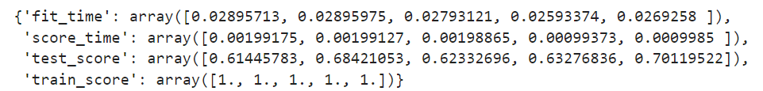

✍ В этом юните мы поговорим об основных методах борьбы с недообучением и переобучением. Мы уже говорили о данных проблемах, когда обсуждали задачи регрессии и классификации. В этом модуле мы закрепим материал и рассмотрим основные способы борьбы с недообучением и переобучением. Для начала немного повторим теорию ↓
Важной характеристикой алгоритма машинного обучения является его обобщающая способность — способность использовать знания, полученные при обучении, на новых данных.
Обобщающая способность часто страдает из-за двух основных проблем машинного обучения: overfitting (переобучение) и underfitting (недообучение).
Переобучение (overfitting) — это проблема, при которой модель чувствительна к незначительным колебаниям в данных в процессе обучения. По сути, такая модель работает намного лучше с обучающими данными, чем с новыми. Она была чрезмерно натренирована на обнаружение уникальных характеристик обучающего набора данных, которые не являются общими закономерностями.
Недообучение (underfitting) — это проблема, при которой алгоритм недостаточно хорошо изучил данные и пропускает важные зависимости между признаками. В случае недообучения мы даже на обучающих данных не можем достичь приемлемых оценок для модели.
Недообучение и переобучение неразрывно связаны друг с другом: попытка бороться с одной проблемой может привести к возникновению другой, поэтому возникает дилемма смещения-разброса (bias-variance tradeoff).
Смещение (bias) — это математическое ожидание (обозначено далее как ) разности между истинным ответом и ответом, выданным моделью. То есть это ожидаемая ошибка модели.
Bias — это теоретическая характеристика недообучения.
Разброс (variance) — это вариативность ошибки, то, насколько ошибка будет отличаться, если обучать модель на разных наборах данных. Математически это дисперсия (разброс) ответов модели (обозначено далее как ).
Variance — это теоретическая характеристика переобучения.
Примечание. Определения, приведённые выше, справедливы для задачи регрессии. В задаче классификации тоже есть формальное определение bias и variance, а также теоретические результаты разложения ошибки на эти компоненты. Теоретические результаты разложения ошибки на bias и variance для регрессии и классификации можно посмотреть здесь.
В случае задачи регрессии underfitting и overfitting можно проиллюстрировать следующим образом:

На первом графике изображена простая модель линейной регрессии, не способная уловить сложную зависимость в данных. На втором — оптимальная модель, которая хорошо описывает зависимость и при этом не имеет переобучения (полином четвёртой степени). На последнем графике изображён полином 27 степени, который подстроился под каждую точку в тренировочном наборе, но не смог уловить общие закономерности.
Underfitting и overfitting в случае задачи классификации:

На рисунке изображены три различные модели: первая — простая логистическая регрессия, вторая — логистическая регрессия, обученная на полиномиальных признаках второй степени, третья — логистическая регрессия, обученная на полиномиальных признаках десятой степени. Видно, что первая модель обладает низким качеством и не обобщает общей зависимости (у неё высокое смещение). Третья же, напротив, идеально выделяет каждое наблюдение в правильный класс, но является переобученной и также не отражает общей зависимости (у неё высокий разброс). Оптимальной моделью является вторая, которая не подстраивается под индивидуальные наблюдения и отражает общую зависимость в данных.
Проблема заключается в том, что в реальных условиях построить визуализацию модели, подобную приведённым выше, невозможно из-за размерности данных (если только мы не применим методы понижения размерности). Поэтому нужно уметь обнаруживать недообучение и переобучение другими способами.
Если с недообучением всё понятно (измеряем метрику на тренировочной выборке и, если она нас не устраивает, делаем вывод, что модель недообучена), то с переобучением всё несколько сложнее. Переобучение является наиболее популярной проблемой, поэтому её необходимо уметь обнаруживать.
Задание 4.1
КАК ОБНАРУЖИТЬ ПЕРЕОБУЧЕНИЕ
Переобучение легко детектируется с помощью изученных нами методов валидации: мы намеренно разбиваем выборку на тренировочную и валидационную (возможно, и тестовую) и смотрим на значения показателей на каждой из выборок, сравнивая их между собой.
Основные способы отследить переобучение:
- hold-out-разбиение,
- k-fold-валидация и leave-one-out-валидация,
- .
О них мы поговорим в следующем юните.
Если качество на валидационной выборке стабильно хуже качества на тренировочной, то это явный признак переобучения.
Рассмотрим пример. Будем использовать тот же набор данных об образцах воды.
Сначала проверим модель на переобучение с помощью отложенной (hold-out) выборки.
Для этого стратифицированно разобьём набор данных на тренировочную и валидационную выборки в соотношении 80/20 и обучим дерево решений с энтропией в качестве критерия информативности и сбалансированными весами классов без ограничения его глубины и количества объектов в листе. Сделаем предсказание для каждой из выборок и рассчитаем метрику -score:
X_train, X_valid, y_train, y_valid = model_selection.train_test_split(X, y, stratify=y, test_size=0.2, random_state=42)
#Создаём модель
model_bad = tree.DecisionTreeClassifier(
criterion='entropy', #критерий информативности
class_weight='balanced', #веса классов
random_state=42 #генератор случайных чисел
)
#Обучаем модель на тренировочной выборке
model_bad.fit(X_train, y_train)
#Делаем предсказание для каждой из выборок
y_train_pred = model_bad.predict(X_train)
y_valid_pred = model_bad.predict(X_valid)
#Выводим значения метрик для тренировочной выборки
print('Train F1 score: {:.2f}'.format(metrics.f1_score(y_train, y_train_pred)))
#Выводим значения метрик для валидационной выборки
print('Valid F1 score: {:.2f}'.format(metrics.f1_score(y_valid, y_valid_pred)))
# Train F1 score: 1.00
# Valid F1 score: 0.67
- Значение -score на тренировочной выборке показывает, что задача классификации образцов воды на пригодные и непригодные для питья решена идеально. Метрика равна максимуму — 1, а значит, и precision и recall для каждого из классов равны 1 (значит, и значения всех остальных метрик тоже максимальны). То есть модель правильно определила класс для всех образцов воды из набора данных.
- Однако значение -score, полученное на валидационной выборке, менее оптимистично. Значение метрики на контроле значительно ниже, чем при обучении.
Это типичная картина переобучения: модель дерева решений полностью адаптировалась под обучающий набор данных, но не нашла общих закономерностей, поэтому результаты на контроле оставляют желать лучшего.
Проверим гипотезу о наличии переобучения у нашего дерева с помощью кросс-валидации k-fold. Организуем стратифицированную кросс-валидацию на пяти фолдах. На каждом шаге кросс-валидации будем вычислять метрику на тренировочных и валидационных фолдах.
#Создаём объект кросс-валидатора k-fold со стратификацией
skf = model_selection.StratifiedKFold(n_splits=5)
#Считаем метрики на кросс-валидации k-fold со стратификацией
cv_metrics = model_selection.cross_validate(
estimator=model_bad, #модель
X=X, #матрица наблюдений X
y=y, #вектор ответов y
cv=skf, #кросс-валидатор
scoring='f1', #метрика
return_train_score=True #подсчёт метрики на тренировочных фолдах
)
display(cv_metrics)

В полученном словаре невооруженным глазом видно, что на тренировочных фолдах значения метрик равны 1, а вот на валидационных метриках ни разу не превысила значения 0.7.
Подсчитаем среднее значение -score на выборках:
print('Train k-fold mean f1: {:.2f}'.format(np.mean(cv_metrics['train_score'])))
print('Valid k-fold mean f1: {:.2f}'.format(np.mean(cv_metrics['test_score'])))
## Train k-fold mean f1: 1.00
## Valid k-fold mean f1: 0.65
Задание 4.2
Задание 4.3

Задание 4.4 (на самопроверку)
Воспользуйтесь функцией plot_probabilities_2d() и постройте разделяющую поверхность обученного дерева решений.
Примечание. Код функции plot_probabilities_2d() вы можете найти в задании 3.6.
Передайте в её аргументы матрицу наблюдений X, вектор ответов y и обученное в задании 4.3 дерево решений.
Является ли ваша модель переобученной?
МЕТОДЫ БОРЬБЫ С ПЕРЕОБУЧЕНИЕМ
Мы посмотрели, как с помощью методов валидации можно определить наличие переобучения. Но как с ним бороться?
Существует несколько основных способов, и с каждым из них мы уже знакомились в нашем курсе. Ключевая идея, заложенная в каждом из методов, звучит так: снизить переобучение = уменьшить разброс (вариативность) ошибки модели:
| 1 |
Уменьшение сложности модели Это основной способ борьбы с переобучением, так как, по сути, повышенная сложность модели и является его причиной. Рекомендации по уменьшению сложности моделей
|
| 2 |
Регуляризация С помощью добавления штрафа в функцию потерь мы намеренно пытаемся увеличить смещение модели, чтобы уменьшить разброс. Закон баланса в действии! Ранее мы изучали регуляризацию только в контексте линейных моделей, но на самом деле она есть и во многих других методах машинного обучения, с которыми мы будем знакомиться в дальнейшем. На рисунке ниже приведено несколько примеров одной и той же модели — полинома восьмой степени с различными коэффициентами регуляризации (обозначен как ). Видно, что чем выше , тем меньше переобучение. Однако есть риск увеличить слишком сильно, и тогда модель превратится в недообученную (правый нижний рисунок).  |
| 3 |
Манипуляции с данными Ещё один верный способ побороть переобучение — увеличить или уменьшить количество примеров, на которых обучается модель.
Также можно отбирать наиболее значимые признаки, которые в наибольшей степени влияют на предсказания модели. О применении метода работы с данными мы поговорим в следующем модуле. |


Сначала необходимо разобраться в причине переобучения модели. Для дерева решений установленный по умолчанию параметр max_depth будет означать, что дерево будет делиться до тех пор, пока не определит правильный класс для каждого объекта из обучающего набора данных.
На реальных данных, подверженных зашумлённости, такой подход в большинстве случаев приводит к переобучению дерева: глубина становится очень большой, и дерево не отражает общих зависимостей в данных.
В таком случае в первую очередь прибегают к «обрезке» деревьев путём ограничения максимальной глубины и/или увеличения количества объектов, при которых вершина дерева превращается в лист и деление прекращается.
Для начала посмотрим на текущую глубину дерева:
print('Current depth:', model_bad.get_depth())
## Current depth: 27
Дерево глубиной 27 — это очень сложная модель. Давайте попробуем её упростить, добавив в дерево решений ограничение на глубину (max_depth). Пусть максимальная глубина дерева будет равна 7.
#Создаём модель
model = tree.DecisionTreeClassifier(
criterion='entropy', #критерий информативности
max_depth=7, #ограничиваем глубину дерева
random_state=42, #генератор случайных чисел
class_weight='balanced' #веса классов
)
#Создаём объект кросс-валидатора k-fold со стратификацией
skf = model_selection.StratifiedKFold(n_splits=5)
#Считаем метрики на кросс-валидации k-fold со стратификацией
cv_metrics = model_selection.cross_validate(
estimator=model, #модель
X=X, #матрица наблюдений X
y=y, #вектор ответов y
cv=skf, #кросс-валидатор
scoring='f1', #метрика
return_train_score=True #подсчёт метрики на тренировочных фолдах
)
print('Train k-fold mean f1: {:.2f}'.format(np.mean(cv_metrics['train_score'])))
print('Valid k-fold mean f1: {:.2f}'.format(np.mean(cv_metrics['test_score'])))
## Train k-fold mean f1: 0.75
## Valid k-fold mean f1: 0.66
После ограничения максимальной глубины удалось уменьшить разницу между метриками на тренировочных и валидационных фолдах кросс-валидации.
Попробуйте самостоятельно изменять глубину дерева в большую и меньшую сторону и проследите, как меняется значение метрик на кросс-валидации.
Попробуем добавить ещё одно ограничение к нашему дереву: увеличим количество объектов, которых достаточно для образования листа дерева (min_samples_leaf). По умолчанию этот параметр равен 1.
Напомним интерпретацию данного параметра. Пусть min_samples_leaf=5. Допустим, в результате разделения получается две вершины: первая — с четырьмя объектами, а вторая — с шестью. Тогда дерево разрешит снова делиться только второй вершине (6 > min_samples_leaf), а первая вершина (4 < min_samples_leaf) дерева превратится в лист, и её деление будет остановлено.
#Создаём модель
model = tree.DecisionTreeClassifier(
criterion='entropy', #критерий информативности
max_depth=7, #ограничиваем глубину дерева
min_samples_leaf=5, #увеличиваем количество объектов в листе
random_state=42, #генератор случайных чисел
class_weight='balanced' #веса классов
)
#Создаём объект кросс-валидатора k-fold со стратификацией
skf = model_selection.StratifiedKFold(n_splits=5)
#Считаем метрики на кросс-валидации k-fold со стратификацией
cv_metrics = model_selection.cross_validate(
estimator=model, #модель
X=X, #матрица наблюдений X
y=y, #вектор ответов y
cv=skf, #кросс-валидатор
scoring='f1', #метрика
return_train_score=True #подсчёт метрики на тренировочных фолдах
)
print('Train k-fold mean f1: {:.2f}'.format(np.mean(cv_metrics['train_score'])))
print('Valid k-fold mean f1: {:.2f}'.format(np.mean(cv_metrics['test_score'])))
## Train k-fold mean f1: 0.74
## Valid k-fold mean f1: 0.66
Нам удалось ещё немного сократить разницу между метриками на тренировочных и валидационных фолдах и уменьшить переобучение.
Примечание. В приведённом выше примере мы выбирали параметры исключительно по принципу «холодно-горячо». Конечно же, в реальности никто так не делает — существуют специальные механизмы перебора комбинаций внешних параметров модели, и мы познакомимся с ними в отдельном модуле.
Задание 4.5
Задание 4.6
Задание 4.7 (на самопроверку)
Воспользуйтесь функцией plot_probabilities_2d() и постройте разделяющую поверхность обученного дерева решений.
Примечание. Код функции plot_probabilities_2d() вы можете найти в задании 3.6.
Передайте в её аргументы матрицу наблюдений X, вектор ответов y и обученное в задании 4.6 дерево решений.
Удалось ли вам избавиться от переобучения модели?
УТЕЧКА ДАННЫХ
Стоит упомянуть об ещё одной проблеме современного машинного обучения, которая называется утечкой данных. Данная проблема несколько похожа на проблему переобучения, но имеет другой характер.
Утечка данных (data leak) — это ситуация, в которой данные, используемые для обучения модели, содержат прямую или косвенную информацию о целевой переменной.
Приведём несколько примеров, когда может возникнуть утечка данных:
| 1 |
очевидные случаи
Два этих случая возникают скорее по невнимательности, и их легко обнаружить. Более опасные причины — скрытые. |
| 2 |
Скрытые случаи, или giveaway-признаки Giveaway — это признаки, которые раскрывают информацию о целевой переменной и не будут доступны после развёртывания модели в реальных условиях. Такие признаки необходимо удалять из данных перед построением модели. Пример № 1 Мы строим модель для прогнозирования определённого состояния здоровья человека. У нас есть признак, который указывает на то, была ли у пациента операция, связанная с тем же заболеванием, которое мы предсказываем. Указание на хирургическое вмешательство в высокой степени предсказывает состояние здоровья, и, вероятно, эта информация будет доступна далеко не всегда (в основном в случаях рецидива). Если мы уже знаем, что пациент перенёс операцию, что могло сказаться на состоянии здоровья, нам может даже не понадобиться прогнозирующая модель. Пример № 2 Мы прогнозируем, продолжит ли юзер пользоваться нашим приложением после какой-то определённой даты. Включение признаков, предоставляющих информацию о будущих посещениях приложения, опять же приведёт к утечке данных. Мы должны использовать только признаки, описывающие предыдущие сеансы, так как информация о будущих сеансах будет недоступна после развёртывания модели. |
Из-за утечки данных прогноз модели становится очень оптимистичным. Вы получаете потрясающее качество во время обучения модели, радуетесь сами и радуете своего заказчика. Однако когда дело доходит до использования модели в реальных условиях, оказывается, что у вас недостаточно данных для построения прогноза.
Как обнаружить утечку данных
-
Читайте описание признаков.
Из описания признаков всегда можно узнать полезную информацию и обнаружить утечку с помощью банальной логики. Если вы предсказываете цену товара, а в вашем наборе данных есть признак цены этого товара со скидкой, очевидно, что данный признак стоит удалить из обучающего набора данных.
-
Проверяйте корреляции с целевым признаком.
В процессе разведывательного анализа вы можете обнаружить признаки, которые очень сильно коррелируют с целевой переменной. Конечно, такая корреляция может быть естественной и не сопровождаться утечкой, например корреляция между количеством комнат в квартире и её ценой. Однако высокая степень корреляции между налоговой выплатой за продажу и ценой квартиры — это яркий пример утечки.
-
Относитесь скептически к подозрительно высокому качеству моделей.
При построении модели вас может насторожить слишком высокое качество даже самых простых моделей, которого в реальных условиях достичь не удалось бы. Это может быть сигналом о наличии утечки данных.
Поэтому для начала старайтесь строить baseline — простые модели машинного обучения, такие как логистическая регрессия.
✍ Утечка данных — широко распространённая проблема в машинном обучении. Начинающие исследователи часто допускают ошибки в построении моделей на данных, содержащих утечку.
Мы обучаем модели с известными данными и ожидаем, что модель будет выполнять прогнозирование с таким же хорошим качеством и в реальных условиях. Для получения качественных показателей в этих прогнозах, модель должна хорошо обобщать данные. Утечка не позволяет модели этого делать и, таким образом, вызывает ложные предположения о качестве модели. Для получения надёжной модели прогнозирования мы должны уделять пристальное внимание выявлению и предотвращению утечки данных.